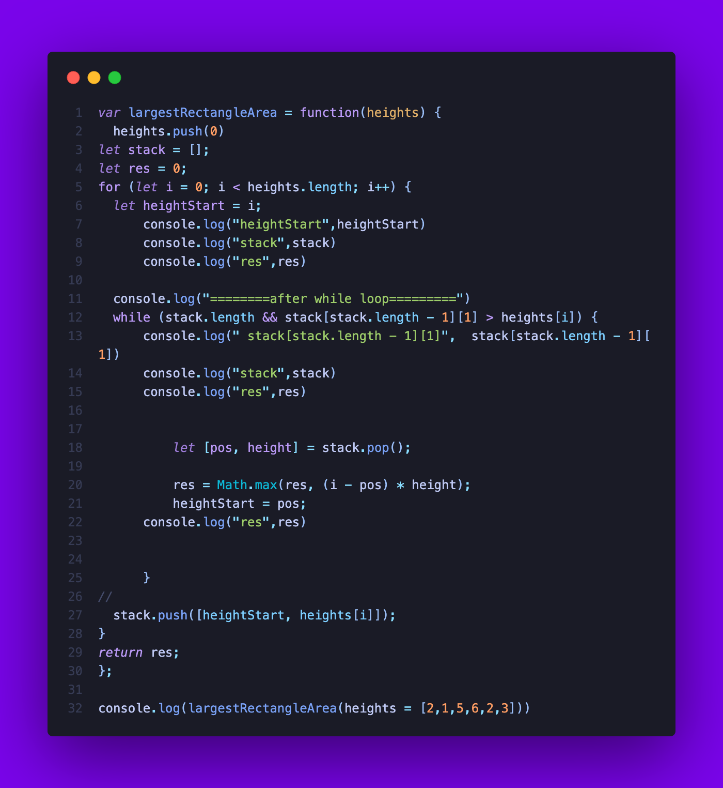

The Purpose of this website is to explain the solutions that are used to solve the Leetcode questions that were given. There is a brief explanation of Data Structures and Algorithms with the Algorithm’s that are used to solve the problems. The problems that I will be explaining are Sliding Window Maximum, Merge K Sorted lists and Largest Rectangle in a Histogram
Leetcode 239: Sliding Window Maximum
This question wants you to find the highest/maximum number inside a certain array length inside the array from left to right and return it . For example, given an array nums and an integer k, you need to find the maximum element in each sliding window of size k that moves from left to right through the array.
This questions asks to merge k sorted linked lists and return it as one sorted list. The input lists may be of different lengths and they can be empty as well.
This Question is to solve the problem of finding the largest rectangular area in a given histogram. The histogram is represented by a series of bars, where the height of each bar corresponds to a given value, and the width of the bar is assumed to be 1. The task is to find the area of the largest rectangle that can be formed by any set of adjacent bars in the histogram.
For example to get the area of the first bar, the height is two and the width is 1. So, width = 2 X 1 = 2.
When analyzing algorithms, we often look at two important factors: time complexity and space complexity. These factors help us understand how efficient an algorithm is and how it will perform as the input size grows.
Time Complexity
Time complexity refers to the amount of time an algorithm takes to complete as the size of the input data increases. It is usually denoted by the big O notation (O(n)), where n is the size of the input. Here are some common time complexities:
O(1) - Constant Time: An algorithm that takes the same amount of time to complete regardless of the input size.
O(log n) - Logarithmic Time: An algorithm that takes time proportional to the logarithm of the input size.
O(n) - Linear Time: An algorithm that takes time proportional to the input size.
O(n log n) - Linearithmic Time: An algorithm that takes time proportional to n times the logarithm of n.
O(n^2) - Quadratic Time: An algorithm that takes time proportional to the square of the input size.
O(2^n) - Exponential Time: An algorithm that takes time proportional to 2 raised to the power of the input size.
Space Complexity
Space complexity refers to the amount of memory space an algorithm takes up as the size of the input data increases. It is also denoted by the big O notation (O(n)), where n is the size of the input. Here are some common space complexities:
O(1) - Constant Space: An algorithm that takes up a fixed amount of memory regardless of the input size.
O(n) - Linear Space: An algorithm that takes up space proportional to the input size.
O(n^2) - Quadratic Space: An algorithm that takes up space proportional to the square of the input size.
My Solutions
Leetcode 239: Sliding Window Maximum
First Solution:
Method: Brute Force
Time Complexity: O(n * k), where n is the length of the input array 'nums' and k is the window size.
Space Complexity : O(n-k+1) because the size of the output array 'result' is proportional to the number of sliding windows that can be formed from the input array.
Method Explanation:
The brute force method. Brute force is a simple and straightforward method for solving problems by trying all possible solutions until a satisfactory one is found. It's like trying every single combination of a lock until you find the correct one
Code Explanation:
The function takes in two parameters which is nums and k.
An empty array is declared to store the max values of each window.
The first for loop iterates through all the elements of the array until the last 3 which is k in this example. This is because if it does not stop at the last 3 elements it will return undefined since it goes out of the k length.
A variable name max is made it, stores all the current iterations in nums
The second for loop iterated through is j = i + 1, and it will increase if the value of j is less than the value of `i + k`. This is to ensure that J gets the values ahead of i by k value . In this instance for example i will be at 1 and j will be at two numbers ahead which are 3 and -1. This is to get all the values in k=3.
If the value of j is bigger than the value of max , max will be replaced by the value of j
The Final Answer of this code is [ 3, 3, 5, 5, 6, 7 ]
Visualization:
Second Solution:
Method: Monotonic Deque
Time Complexity: O(n) where n is the number of elements in the input array nums.
Space Complexity :O(k) where k is the size of the sliding window. In the worst case, when the sliding window covers the entire array, the size of the queue q can be equal to the size of the window k, which contributes to the space complexity. However, since the window slides over the array, the size of the queue does not increase linearly with the size of the input array. Therefore, the space complexity is O(k) and not O(n).
Method Explanation:
The Monotonic Deque. Is a Deque. What is a Deque? Deque or Double Ended Queue is a type of queue in which insertion and removal of elements can either be performed from the front or the rear. Thus, it does not follow FIFO rule (First In First Out). For example like a Stack.
A Monotonic Deque is the elements in the deque from head to tail are in decreasing order.
Mono Deque:
Code Explanation:
The function takes in two parameters which is nums and k.
A Variable `q` stores the index number to keep track of the sliding window.
`Res` is used to store the results of the Maximum in the Sliding Window
The first for loop iterates through all the elements of the array
The while loop checks if `q` is not empty and the last element of q is not bigger than or equal to the current index of `nums[i]`, If it is true, the last element of `q` is then removed. For example, if the next number is biggest than or equal to the current number, the current number is no longer the biggest number in the sliding window.
The current index `i` is then pushed into Q
The if Statement Checks if the first items in `q` which is q[0] are equal to`i - k`. If it is equal, then the first element is removed with shift(). Shift() removes the first element in the array. This if statement checks whether the first element in q corresponds to an element outside the current window. If this is the case, we need to remove the first element in q, because it no longer corresponds to an element in the current window.
The second if statement checks if the current index is bigger than or equal to k - i. The reason for subtracting 1 from k in the if statement is because of the zero-based indexing. If it is push the first element of the first index of `q` into res. If i is greater than or equal to k - 1, then it means that the current window has k elements, and we can add the maximum element of the window to the res array.
The Final Answer of this code is [ 3, 3, 5, 5, 6, 7 ]
Visualization:
Leetcode 23. Merge k Sorted Lists
First Solution:
Method: Merge Sort
Time Complexity: O(N log k), where N is the total number of nodes in all linked lists and k is the number of linked lists
Space Complexity :O(k), where k is the number of linked lists. This is because the code creates a new node for each merged node, which adds up to a total of k nodes.
Method Explanation:
Merge sort is a divide-and-conquer algorithm that sorts an array by dividing it into two halves, sorting each half recursively, and then merging the two sorted halves into one sorted array.
Code Explanation:
We make a function called mergeKlists that takes in `lists` as its parameter.
A variable called `previous` is assigned to a value which is null. This is to keep track of the merged linked list
Then a for loop is declared to loop through the merged linked lists.
For each linked lists we call the function `mergeTwolists` passing in the previous linked list and the current linked list as the argument
After merging all the linked lists we return previous.
Now we take the `mergeTwoLists` function that takes in two linked lists. `list1` and `list2,
Then we create ListNode with a value of 0. This will act as a sentinel node and the tail node since both are assigned to the same values, which is a common technique used when working with linked lists. Sentinel is used to keep track of the head of the merged linked list, while tail is used to keep track of the end of the merged linked list. When we merge two linked lists, we need to keep track of the end of the merged list so that we can add new nodes to the end as we iterate through the two lists. We update it with each iteration of the while loop using tail = tail.next. This ensures that we always add new nodes to the end of the new linked list.
After that we declare a while loop to iterate through both lists and add nodes to the new linked lists in the correct order. This while loop runs as long as both list1 and list2 have nodes that haven't been added to the new list yet.
Inside the loop, we check which of the two lists has the smaller first value with the variable called canAddl1. We do this by comparing the .val property of the first node in each list.
Then the first `If statement` checks if list1 has the smaller value (or if the two values are equal), we add the first node from list1 to the new list and advance the pointer for list1 to the next node.
Then the `else statement` returns if list2 has the bigger value, we add the first node from list2 to the new list and advance the pointer for list2 to the next node.
After adding a node to the new list, we advance the pointer for the tail to the next node in the new list. That is the point of tail = tail.next is to update the tail variable to point to the last node in the newly merged linked list after each iteration of the while loop.
Once the loop is finished. This operation adds the remaining nodes in either list1 or list2 (if any) to the end of the new merged linked list. After all the nodes have been merged and added to the new linked list, the code return sentinel.next returns a reference to the first node in the new merged list. This will return the values in the newly sorted linked list in incrementing order.
Then we return the new linked list
The Final Answer of this code is 1->1->2->3->4->4->5->6
Visualization:
-->
No visualization because leetcode uses array as its linked lists :kekw:
Second Solution:
Method:Divide and Conquer
Time Complexity: O(n log k), where n is the total number of nodes in all the input linked lists and k is the number of input linked lists. This is because the helper function uses a divide and conquer strategy to merge the linked lists in a balanced way, splitting the input lists into halves and recursively merging the halves until only one merged list remains.
Space Complexity : O(log k) due to the use of recursion in the helper function. This is because each recursive call to the helper function adds a new call stack frame to the stack, which requires additional memory
Method Explanation:
It involves breaking down a large problem into smaller sub-problems, solving them recursively, and then combining the solutions to solve the larger problem.
Code Explanation:
This function called `merge` takes in two linked lists, left and right,
The first if statement checks if left is null. If it is, then we can simply return right
The second if statement checks if right is null. If it is, then we can simply return left
The third if statement checks if the value of the first node in left is less than the value of the first node in right. If it is, then we know that the first node in left should be the first node in the merged list. We recursively call merge with left.next and right, and set the next property of the current node in left to the result of that call. We then return left, since we know that the first node in the merged list is the first node in left. If none of the conditions are met then it is done to the right node.
The next function called `helper` takes in the parameters `lists` which are the values, `start` parameter for the beginning index and `end` for the end index.
The next if statement checks if `start` is equal to end. This line of code checks if the start index of the given linked list is equal to the end index. If they are equal, it means that there is only one linked list left to merge, and it returns that list. In other words, if the start and end indices are equal, there is only one list to merge, and we can return it directly without performing any further operations.
The second if statement checks if start is less than end. If it is, then we calculate the midpoint of the range between start and end, and recursively call helper with start, mid, and lists. We also recursively call helper with lists, mid + 1 and end . It adds 1 to the midpoint mid because we want to include the element at the index mid in the left list and start the right list at the index mid + 1. We then return the result of calling merge with the two lists returned by these recursive calls. If none of the above conditions is met, then we can simply return null.
The Final Answer of this code is 1->1->2->3->4->4->5->6
Visualization:
No visualization because leetcode uses array as its linked lists :kekw:
LeetCode 84.Largest Rectangle in Histogram
First Solution:
Method: Brute Force
Time Complexity: O(N^3) because of the three nested for loops.
Space Complexity : O(1) since only a few variables are used to store the minimum and maximum area, and they don't scale with the input size.
Method Explanation:
The brute force method. Brute force is a simple and straightforward method for solving problems by trying all possible solutions until a satisfactory one is found. It's like trying every single combination of a lock until you find the correct one
Code Explanation:
The function takes in an array. The parameter that takes it in is called heights and the `maxArea` stores the highest area achieved in the rectangle
The first for loop iterates through the whole array
The second for loop value is set to `i` and it iterates through the whole array
The `min` variable is declared and its value is set to infinity, It is set to infinity because if `min` nitialized to a value that is lower than any element in the subarray, the result may not be correct.
The third for loop is k is set to the value of `j`. It increases if the value is lower than j. This is because if the next value is lower than the current value it can continue and get the biggest area.
It then gets the lowest value between min and `heights[k]. min is used to keep track of the minimum height in the current subarray being considered.
It will then get the area by `min * ((j - i) + 1);`. It is `+1` because we are adding 1 to the width, because we need to include the current bar being considered.
It will then get the area by `min * ((j - i) + 1);`. It is `+1` because we are adding 1 to the width and need to include the current bar being considered.
Then it uses Math.max()` to return the highest value between `maxArea and area`
The Final Answer of this code is 10
Visualization:
Second Solution:
Method: Monotonic Stack
Time Complexity: O(n) where n is the number of elements in the input array nums.
Space Complexity :O(n) because it uses a stack data structure that can hold at most n elements in the worst case, where n is the length of the heights array.

Method Explanation:
The Monotonic Stack. Is a Stack. What is a Stack? A stack is a linear data structure that follows the principle of Last In First Out (LIFO). This means the last element inserted inside the stack is removed first.
Monotonic stack is like a regular stack with one key distinction in the push operation: Before we push a new element onto the stack, we first check if adding it breaks the monotonic condition. If it does, then we pop the top element off the stack until pushing the new element no longer breaks the monotonic condition.
Monotonic Stack:
Code Explanation:
The function takes in a parameter called heights
`0` is then pushed into the array. This is done because the algorithm works by pushing elements onto a stack, and we need to ensure that the stack is emptied at the end of the algorithm. By adding a zero to the end of the heights array, we ensure that the stack will be emptied after processing all of the original heights.
An empty array is declared to the variable name `stack`. This is used in the stack algorithm
An array called `res` is declared to a Value of 0. Res will update and return the Highest area in the Algorithm.
A for loop is declared and iterates through the whole variable with a value of `i`
A variable called `heightStart` is then declared with the value of i. This is to keep track of the index in the array.
Then a while loop is declared. It is only executed if the stack is not empty, and the last element of the stack is bigger than heights[i]. For example: 6 is bigger than 2 and then 5 is bigger than 2 so the while loop will execute. This is used to stop the max area that it can calculate since the next iterated number is smaller.
Then the stack is destructured to the value called `[pos, height]` and popped
It then gets the max value between the current `res` and between (i-pos) times height. We are using this formula because i is on the index on where it has started and pos is the current index of where the area is being stop calculated. This is to get the width of the area. The formula to get area is HEIGHT X WIDTH
`heightStart` is then assigned to `pos` so the next iteration will start at that index.
If the while loop is not executed then it will push the index `i` and the index number in the array heights[i] into stack.
The Final Answer of this code is 1->1->2->3->4->4->5->6